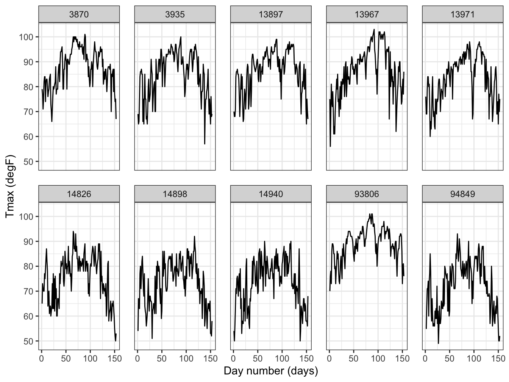
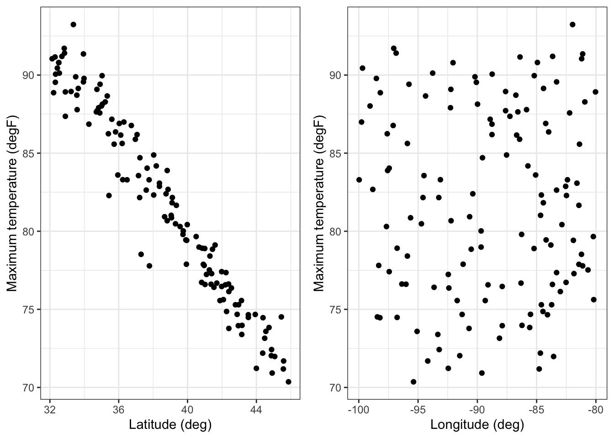

Chapter 1 Exploring Spatio Temporal Data
library("animation")
library("dplyr")
library("tidyr")
library("ggplot2")
library("gstat")
library("maps")
library("STRbook")
library("grid")
library("gridExtra")
library("CCA")
library("sp")
library("spacetime")In this part, we will have a look at some basics about STD before applying statistical models. This includes calculating basic statistics, visualizing map etc. This section is largely based on the Spatio-Temporal Statistics with R, Cressie. So, if you want to know the details, please refer to it.
1.1 Representation of Spatio Temporal Data in R
Although there are many ways to represent spatial data or time series data in R, there are relatively few ways to represent the STD in R. In this book, we will use the class defined in the R package spacetime. Classes defined in this package extend sp classs for spatial data and xts class for time series data.
Some simple tables can represent the STD as following three classes:
- time-wide, where columns correspond to different time points
- space-wird, where columns correspond to different spatial features (e.g., locations, regions, grid points)
- long formats, where each record corresponds to a specific time and space coordinate
Objects in spacetime offer some additional information such as the map projection, time zone or polygon boundaries where lattice data are defined.
Pebesma (2012) considers four classes of space-time data:
- full grid (STF), a combination of any sp object and any xts object to represent all possible locations on the implied space-time lattice;
- sparse grid (STS), as STF, but contains only the non-missing space-time combina- tions on a space-time lattice;
- irregular (STI), an irregular space-time data structure, where each point is allocated a spatial coordinate and a time stamp;
- simple trajectories (STT), a sequence of space-time points that form trajectories.
1.2 Visualization of STD
There are some basic ways to visualize STD. We will see them briefly.
Spatial Plots First of all, for fixed time point, plots of covariate of interest can be plotted with longitude and latitude. Moreover, we can vary the time point to see some pattern in specific location. Below is the example figure that shows max temperature according to the different data.
set.seed(1)
## ----message=FALSE, warning = FALSE--------------------------------------
data("NOAA_df_1990", package = "STRbook")
Tmax <- filter(NOAA_df_1990, # subset the data
proc == "Tmax" & # only max temperature
month %in% 5:9 & # May to September
year == 1993) # year of 1993
## -----------------------------------------------------------
Tmax %>% select(lon, lat, date, julian, z) %>% head()## lon lat date julian z
## 1 -81.43333 39.35 1993-05-01 728050 82
## 2 -81.43333 39.35 1993-05-02 728051 84
## 3 -81.43333 39.35 1993-05-03 728052 79
## 4 -81.43333 39.35 1993-05-04 728053 72
## 5 -81.43333 39.35 1993-05-05 728054 73
## 6 -81.43333 39.35 1993-05-06 728055 78## -----------------------------------------------------------
Tmax$t <- Tmax$julian - 728049 # create a new time variable
## -----------------------------------------------------------
Tmax_1 <- subset(Tmax, t %in% c(1, 15, 30)) # extract data
## -----------------------------------------------------------
NOAA_plot <- ggplot(Tmax_1) + # plot points
geom_point(aes(x = lon,y = lat, # lon and lat
colour = z), # attribute color
size = 2) + # make all points larger
col_scale(name = "degF") + # attach color scale
xlab("Longitude (deg)") + # x-axis label
ylab("Latitude (deg)") + # y-axis label
geom_path(data = map_data("state"), # add US states map
aes(x = long, y = lat, group = group)) +
facet_grid(~date) + # facet by time
coord_fixed(xlim = c(-105, -75),
ylim = c(25, 50)) + # zoom in
theme_bw() # B&W theme
NOAA_plot
Figure 1.1: Here is a nice figure!
Time Series plots For fixed location, time series plots which show some trend in variable can be plotted. Below is the example figure that shows max temperature for randomly selected 10 stations according to the days
## -----------------------------------------------------------
UIDs <- unique(Tmax$id) # extract IDs
UIDs_sub <- sample(UIDs, 10) # sample 10 IDs
Tmax_sub <- filter(Tmax, id %in% UIDs_sub) # subset data
## ------------------------------------------------------------------------
TmaxTS <- ggplot(Tmax_sub) +
geom_line(aes(x = t, y = z)) + # line plot of z against t
facet_wrap(~id, ncol = 5) + # facet by station
xlab("Day number (days)") + # x label
ylab("Tmax (degF)") + # y label
theme_bw() + # BW theme
theme(panel.spacing = unit(1, "lines")) # facet spacing
TmaxTS
Hovmoller Plots This is the two dimensional plot with space-time visualization where space is collapsed onto one dimension. That is, traditionally, space is identified with longitude, latitude but in Hovmoller plots, not both of them not one of them is used. Below is ths Hovmoller plots for the longitude and latitude for the Tmax variable in NOAA data set. Note that as increasing latitude, the temperature goes down. This implies that we may include the interation effect with the time and latitude variable.
## ------------------------------------------------------------------------
lim_lat <- range(Tmax$lat) # latitude range
lim_t <- range(Tmax$t) # time range
lat_axis <- seq(lim_lat[1], # latitude axis
lim_lat[2],
length=25)
t_axis <- seq(lim_t[1], # time axis
lim_t[2],
length=100)
lat_t_grid <- expand.grid(lat = lat_axis,
t = t_axis)
## -----------------------------------------------------------
Tmax_grid <- Tmax
dists <- abs(outer(Tmax$lat, lat_axis, "-"))
Tmax_grid$lat <- lat_axis[apply(dists, 1, which.min)]
## ------------------------------------------------------------------------
Tmax_lat_Hov <- group_by(Tmax_grid, lat, t) %>%
summarise(z = mean(z))
## ------------------------------------------------------------------------
Hovmoller_lat <- ggplot(Tmax_lat_Hov) + # take data
geom_tile(aes(x = lat, y = t, fill = z)) + # plot
fill_scale(name = "degF") + # add color scale
scale_y_reverse() + # rev y scale
ylab("Day number (days)") + # add y label
xlab("Latitude (degrees)") + # add x label
theme_bw() # change theme
Hovmoller_lat1.3 Exploratory Analysis of STD
In this section, we consider some basic statistics for exploratory analysis of STD. Specifically, empirical means, empirical coavariances, spatio-temporal covariograms, semivariograms will be covered and the use of empirical orthogonal functions and their associated principal-component time series, and spatio-temporal canonical correlation analysis will be considered.
1.3.1 Empirical Spatial Means and Covariances
Assume that we have observations \(Z(\mathbf{s}_i ; t_j)\) for spatial locations \(\{ \mathbf{s}_i: \; i=1, \cdots, m \}\) and times \(\{ t_j: \; j=1, \cdots, T \}\). The empirical spatial mean for location \(\mathbf{s}_i\), \(\hat{\mu}_{z,s} (\mathbf{s}_i)\) is then found by averaging over time:
\[\begin{equation} \hat{\mu}_{z,s} (\mathbf{s}_i) \equiv \dfrac1T \sum^T_{j=1} Z(\mathbf{s}_i; t_j) \tag{1} \end{equation}\]
For \(m\) spatial locations, we assume there are equally \(T\) time stamps in (1). This can be extended to \(m\) dimensional vector. Note that for unbalanced time stamps, \(T\) is changed to \(T_i\) where index \(i\) denotes the location.
Likewise, one can average across space for fixed time point \(t_j\). That is
\[\begin{equation} \hat{\mu}_{z,t} (t_j) \equiv \dfrac1m \sum^m_{i=1} Z(\mathbf{s}_i;t_j) \tag2 \end{equation}\]
Through empirical means, we can get some useful insights regarding STD, e.g.,
set.seed(1)
## -----------------------------------------------------------
data("NOAA_df_1990", package = "STRbook")
Tmax <- filter(NOAA_df_1990, # subset the data
proc == "Tmax" & # only max temperature
month %in% 5:9 & # May to September
year == 1993) # year of 1993
Tmax$t <- Tmax$julian - 728049 # create a new time variable
## -----------------------------------------------------------
spat_av <- group_by(Tmax, lat, lon) %>% # group by lon-lat
summarise(mu_emp = mean(z)) # mean for each lon-lat
head(spat_av)## # A tibble: 6 x 3
## # Groups: lat [6]
## lat lon mu_emp
## <dbl> <dbl> <dbl>
## 1 32.1 -81.2 91.0
## 2 32.2 -98.2 88.9
## 3 32.3 -86.4 91.2
## 4 32.3 -90.1 89.5
## 5 32.3 -88.8 90.1
## 6 32.4 -99.7 90.4## ------------------------------------------------------------------------
lat_means <- ggplot(spat_av) +
geom_point(aes(lat, mu_emp)) +
xlab("Latitude (deg)") +
ylab("Maximum temperature (degF)") + theme_bw()
lon_means <- ggplot(spat_av) +
geom_point(aes(lon, mu_emp)) +
xlab("Longitude (deg)") +
ylab("Maximum temperature (degF)") + theme_bw()
grid.arrange(lat_means, lon_means, ncol=2) Note that for latitude, as latitude decreases, the empirical mean of max temperature, which is grouped by latitude and longitude, increases.
It is often useful to consider the empirical spatial covariability in STD. Between two spatial locations \(\mathbf{s}_i, \mathbf{s}_k\), the empirical lag-\(\tau\) covariance is defined by
\[\begin{equation} \hat{C}^{(\tau)}_z (\mathbf{s}_i, \mathbf{s}_k) \equiv \dfrac1{T-\tau} \sum^T_{j=\tau+1} ( Z(\mathbf{s}_i; t_j) - \hat{\mu}_{z,s}(\mathbf{s}_i) )( Z(\mathbf{s}_k; t_j - \tau) - \hat{\mu}_{z,s}(\mathbf{s}_k) ) \tag3 \end{equation}\]
If we consider \(m\) locations, the covariability will become covariance matrix, with \(m \times m\) dimension. In general, it is difficult to gain insight from this matrix. But one can sometimes get insights by splitting the domain into “strips” corresponding to one of the spatial dimensions and then plotting the covariance matrix for those strips.
lm1 <- lm(z ~ lat + t + I(t^2), data = Tmax) # fit a linear model
Tmax$residuals <- residuals(lm1) # store the residuals
spat_df <- filter(Tmax, t == 1) %>% # lon/lat coords of stations
select(lon, lat) %>% # select lon/lat only
arrange(lon, lat) # sort ascending by lon/lat
m <- nrow(spat_av) # number of stations
## ------------------------------------------------------------------------
X <- select(Tmax, lon, lat, residuals, t) %>% # select columns
spread(t, residuals) %>% # make time-wide
select(-lon, -lat) %>% # drop coord info
t() # make space-wide
## ------------------------------------------------------------------------
Lag0_cov <- cov(X, use = 'complete.obs')
Lag1_cov <- cov(X[-1, ], X[-nrow(X),], use = 'complete.obs')
## ------------------------------------------------------------------------
spat_df$n <- 1:nrow(spat_df) # assign an index to each station
lim_lon <- range(spat_df$lon) # range of lon coordinates
lon_strips <- seq(lim_lon[1], # create 4 long. strip boundaries
lim_lon[2],
length = 5)
spat_df$lon_strip <- cut(spat_df$lon, # bin the lon into
lon_strips, # their respective bins
labels = FALSE, # don't assign labels
include.lowest = TRUE) # include edges
## ------------------------------------------------------------------------
head(spat_df) # print the first 6 records of spat_df## lon lat n lon_strip
## 1 -99.96667 37.76667 1 1
## 2 -99.76667 36.30000 2 1
## 3 -99.68333 32.43333 3 1
## 4 -99.05000 35.00000 4 1
## 5 -98.81667 38.86666 5 1
## 6 -98.51667 33.98333 6 1
Note that there is some spatial dependence in the plots, where spatial covariance decreases as latitude decreases.
We can also calculate lag-\(\tau\) cross covariance between two different data, i.e., \({\mathbf{Z}_{t_j}}, {\mathbf{X}_{t_j}}\)
1.3.2 Elements of point-referenced modeling
Before dive into the point-referenced modeling, let’s define some basic elements required for modeling
strictly stationairty
if distribution of \((Y(s_1), \cdots, Y(s_n))\) is the same as that of \((Y(s_1 + h), \cdots, Y(s_n + h))\)
weak stationairty
if \(\mu(s) \equiv \mu\) (constant mean) and \(Cov(Y(s),Y(s+h))=C(h)\)
intrinsic stationarity
\(E[Y(s+h) - Y(s)]^2 = Var(Y(s+h) - Y(s)) = 2\gamma(h)\) (soley depends on \(h\))
variograms
\(2\gamma(h)\) in intrinsic stationarity definition
semivariograms
\(\gamma(h)\) in intrinsic stationarity definition
Isotropy
if the semivariogram function \(\gamma(h)\) depends upon only through its length \(||h||\), which is written as \(\gamma(||h||)\)
Anisotropy
spatial process which is not isotropy
covariagram
C(h) defined in weak stationarity
For spatio-temporal covariogram or semivariogram, we simply add the temporal index. For example, for spatio-temporal dataset, semivariogram is defined as \(\gamma(s_i,s_k;t_j,t_l) \equiv \dfrac12 Var(Z(s_i;t_j) - Z(s_k;t_l))\).
variogram viz is not included yet.
1.3.3 Empirical Orthogonal Functions (EOFs)
EOFs can reveal some spatial dependence underlying in spatio-temporal data. EOFs can be obtained from spectral decomposition of empirical covariance matrix or equivantly, singular value decomposition on centered data matrix. In this section, we get the EOFs through SD on covariance matrix. By the spectral decomposition on the lag-0 spatial covariance matrix,
\[\begin{equation} \hat{C}^{(0)}=\Psi \Lambda \Psi^{T} \tag{3} \end{equation}\]
The eigenvectors in \(\Psi\) defined in (3) are called EOFs which are often plotted as spatial maps. Also, for \(k=1, \cdots, m\), the \(k\)th principal component (PC) time series are given by \(a_k(t_j) \equiv \psi^{'}_kZ_{t_j}\). Below are the figures that show the first two EOFs. Note that there is a clear pattern in center and eastern region. At that time, this pattern was matched with the EL Nino and La Nina.
data("SSTlandmask", package = "STRbook")
data("SSTlonlat", package = "STRbook")
data("SSTdata", package = "STRbook")
## ------------------------------------------------------------------------
delete_rows <- which(SSTlandmask == 1)
SSTdata <- SSTdata[-delete_rows, 1:396]
## ------------------------------------------------------------------------
## Put data into space-wide form
Z <- t(SSTdata)
dim(Z)## [1] 396 2261## ------------------------------------------------------------------------
## First find the matrix we need to subtract:
spat_mean <- apply(SSTdata, 1, mean)
nT <- ncol(SSTdata)
## Then subtract and standardize:
Zspat_detrend <- Z - outer(rep(1, nT), spat_mean)
Zt <- 1/sqrt(nT - 1)*Zspat_detrend
## ------------------------------------------------------------------------
E <- svd(Zt) # svd on empirical covariance
## ------------------------------------------------------------------------
V <- E$v
colnames(E$v) <- paste0("EOF", 1:ncol(SSTdata)) # label columns
EOFs <- cbind(SSTlonlat[-delete_rows, ], E$v)
head(EOFs[, 1:6])## lon lat EOF1 EOF2 EOF3 EOF4
## 16 154 -29 -0.004915064 -0.012129566 -0.02882162 8.540892e-05
## 17 156 -29 -0.001412275 -0.002276177 -0.02552841 6.726077e-03
## 18 158 -29 0.000245909 0.002298082 -0.01933020 8.591251e-03
## 19 160 -29 0.001454972 0.002303585 -0.01905901 1.025538e-02
## 20 162 -29 0.002265778 0.001643138 -0.02251571 1.125295e-02
## 21 164 -29 0.003598762 0.003910823 -0.02311128 1.002285e-02## ------------------------------------------------------------------------
TS <- data.frame(E$u) %>% # convert U to data frame
mutate(t = 1:nrow(E$u)) %>% # add a time field
gather(EOF, PC, -t) # put columns (except time)
# into long-table format with
# EOF-PC as key-value pair
## ------------------------------------------------------------------------
TS$nPC <- TS$PC * sqrt(nT-1)
## ------------------------------------------------------------------------
firstEOF = ggplot(EOFs) + geom_tile(aes(x = lon, y = lat, fill = EOF1)) +
fill_scale(name = "degC") + theme_bw() +
xlab("Longitude (deg)") + ylab("Latitude (deg)")
secondEOF = ggplot(EOFs) + geom_tile(aes(x = lon, y = lat, fill = EOF2)) +
fill_scale(name = "degC") + theme_bw() +
xlab("Longitude (deg)") + ylab("Latitude (deg)")
grid.arrange(firstEOF, secondEOF)
1.4 Wrap up
In this chapter, we learn about some basics spatio-temporal object used in R. Also, we talk some starting points before applying complex spatio-temporal model from mean, covariance aggregation to EOFs. After calculating these statistics, we visualize them for better understanding phenomenon. For more advanced exploratory spatio-temporal data analysis, we will take a close look at how to draw map, from defining various spatial object such as sp, SpatialPolygon to finally drawing desired map using tm package.